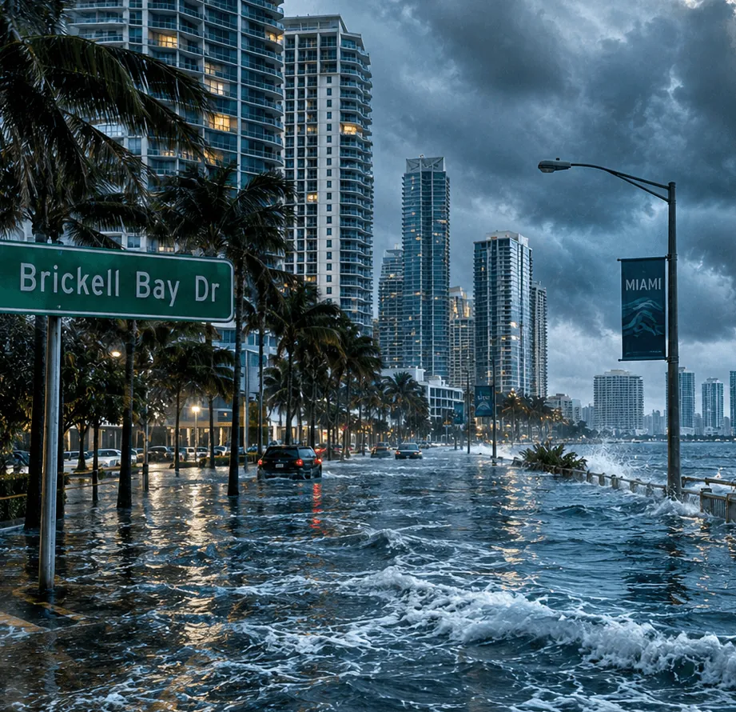
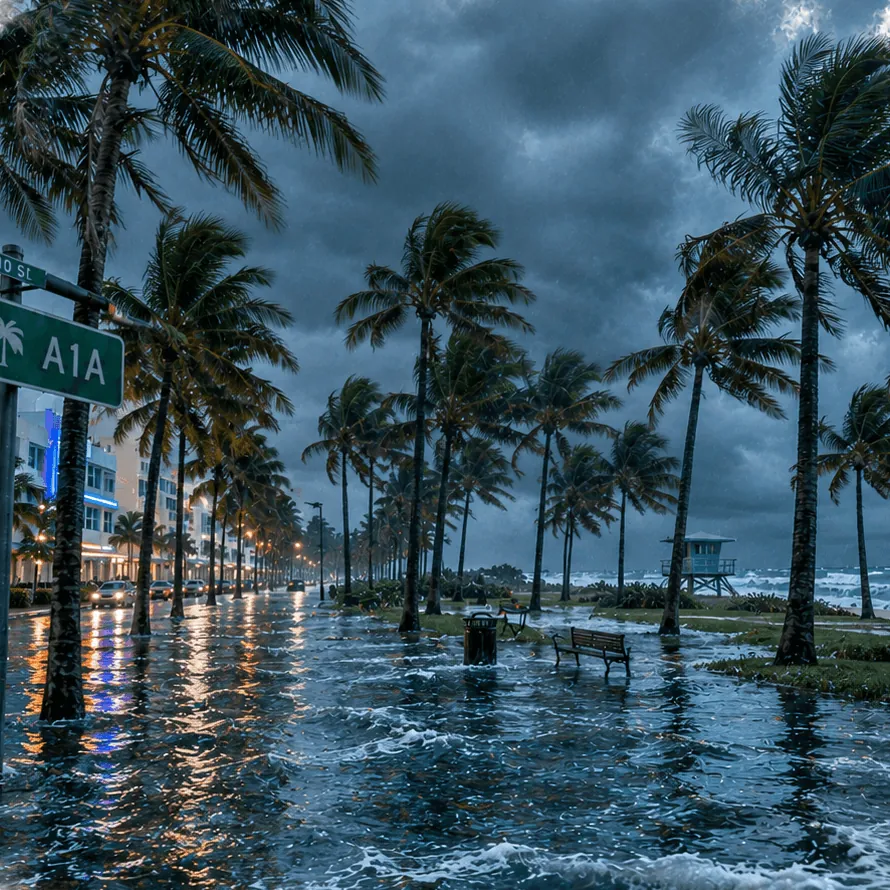
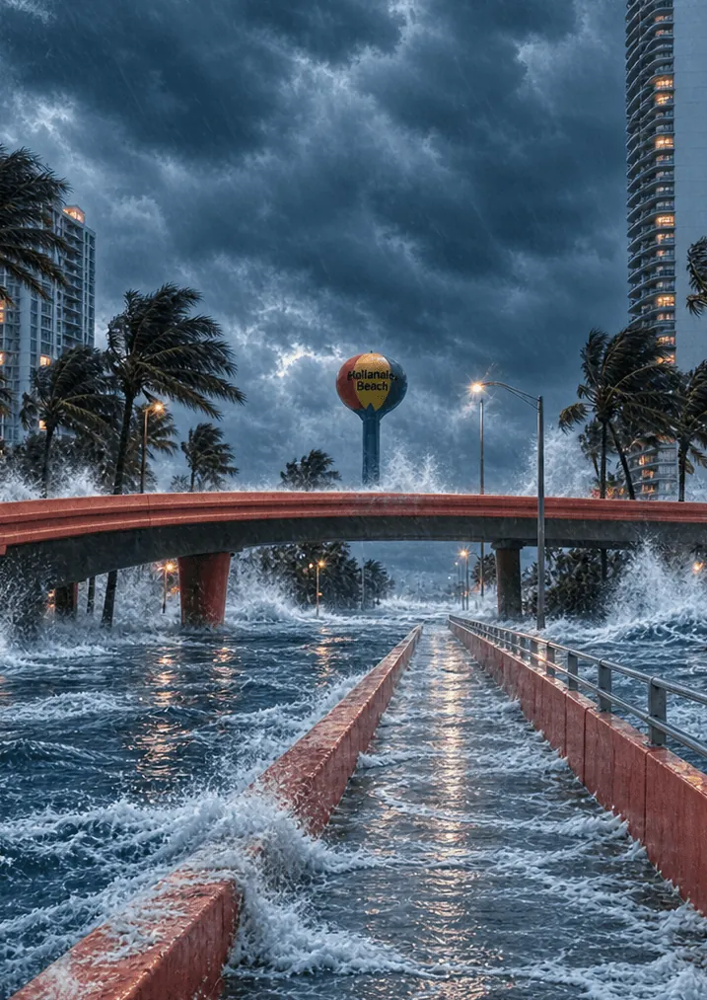
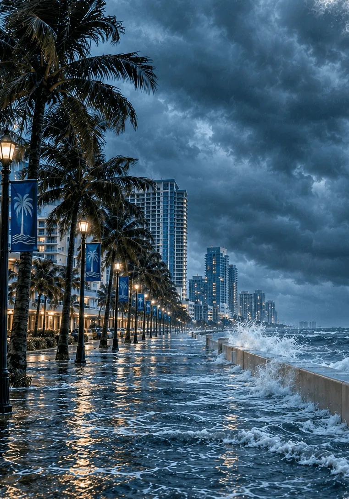
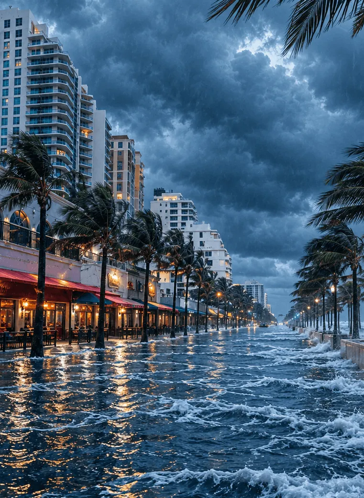

Live conditions · Miami
King Tide with Street Flooding Likely in South Florida
Seasonal king tides peak this evening. Expect shallow water on low streets in Brickell and Shorecrest around high tide.
-
+1.9ft
Miami Beach
High risk
-
+1.2ft
Hollywood
Moderate risk
-
+1.6ft
Fort Lauderdale
High risk
King tide season 2026
Cycle 5 of 9
- Aug11 – 14Past
- Sep9 – 13Past
- Sep26 – Oct 1Past
- Oct7 – 13Past
- Oct24 – 31Now
- Nov5 – 11
- Nov22 – 28
- Dec5 – 8
- Dec23 – 27
Choose a city
Is your address at risk?
Enter any address in Miami-Dade or Broward to see its flood zone, elevation, and projected 2050 risk.
Example result
1700 Convention Center Dr, Miami Beach
FEMA flood zone
AE
High-risk zone. Flood insurance usually required with a federally backed mortgage.
Elevation vs. 2050 water level
Water is projected to reach 0.4 ft above ground level at peak tides.
Risk level
High
Step 3 of 4 on our scale: Low, Moderate, High, Severe.
What this means: this property already sits in a high-risk zone, and by 2050 the highest tides could reach street level. Look into flood insurance and an elevation certificate.
Not an official flood determination. Confirm your zone on the FEMA Flood Map Service Center or with your insurer.
Updated weekly
Sample headlinesLatest news
-
IMAGE: Raising Alton Road
Miami Beach raises another stretch of Alton Road
The city adds pumps and lifts the roadway up to two feet ahead of next year's king tides.
-
IMAGE: Tidal valve
Fort Lauderdale adds tidal valves in Las Olas Isles
One-way valves aim to stop bay water from backing up through storm drains at high tide.
-
IMAGE: Sunny-day flooding
King tide season brings sunny-day flooding to Shorecrest
Residents report ankle-deep water at peak tide for the third month in a row.
Five cities, one coastline
Your city
-

-

-

-

-

South Florida at a glance
Sample dataBy the numbers
-
+10–17in
Sea level rise expected in South Florida by 2040
Source: Southeast Florida Regional Climate Change Compact (to verify)
-
Xdays
Sunny-day flood days in Miami last year
Source: NOAA High Tide Flooding Outlook (placeholder)
-
Xproperties
In high-risk flood zones in Miami-Dade
Source: FEMA flood maps (placeholder)
-
$Xbillion
Property value at risk by 2050
Source: to verify (placeholder)
Why it's happening
Why the water keeps coming
Rising seas
Sea level along the Southeast U.S. coast has risen faster over the last decade than the global average. Every inch raises the starting point for every tide.
Source: NOAA Sea Level TrendsKing tides
The highest tides of the year arrive in early fall, when the moon, sun, and warm water line up. They push seawater up storm drains and into low streets on sunny days.
Source: NOAA Tides & CurrentsPorous limestone
South Florida sits on limestone full of holes, like a hard sponge. Seawater moves through it and comes up from below, so seawalls alone can't keep it out.
Source: USGS Biscayne AquiferHeavier rain
Stronger downpours dump more water at once. Drains that empty into the bay can't keep up when the bay itself is already near street level.
Source: National Weather ServiceWhat you can do
-
Know your flood zone
Check FEMA maps and your elevation certificate.
Learn how to check your flood zone -
Get covered
Standard homeowners insurance doesn't cover floods.
Insurance basics -
Protect your property
Flood vents, barriers, and elevation.
See options -
Stay alerted
Sign up for county flood alerts.
Get alerts
Know before the water does
Look up any address in Miami-Dade or Broward in seconds. Free, no sign-up.